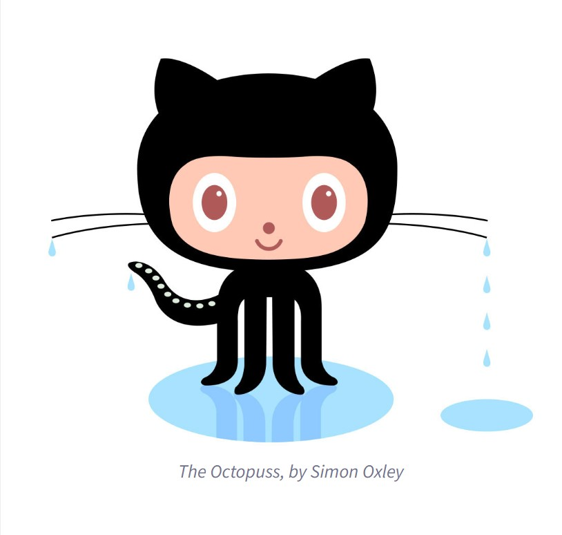

Github Info
- Q. What is a version control system?
A. A way in which changes codes and other files can be tracked and managed [1].
- Q. What is Git?
A. A free version control system [2]
- Q. What is the difference between Git and Github?
A. Git is the version control system and Github is the platform that host git repositories [3].
- Q. Who started Github and how was it started?
A. Chris Wanstrath, P. J. Hyett, Tom Preston-Werner and Scott Chacon started GitHub in 2007 after developing the tool for their work [4].
- Q. How much does a Github account cost?
A. It depends on the type of account one has, but it is usually free.
- Q. What is the Octocat?
A. The mascot of Github [5]

- Repository - Contains all of the project files and documentation [6]
- Commit - Is a change to a file [6].
- Fork - Are a copy of another's repository on one's personal account that when changes are made, it doesn't affect the original repository [6].
- Push - Are when changes are sent to a remote repository [6].
- Pull requests - Are changes that are requested by the user that can be accepted by other collaboraters of the repository [6].
- Workflows - Is a process that runs several jobs. it is automated [7].
- Issues - Are suggestions for impovements to the project [6].
- Raw button - Allows the user to view/copy raw content in a file [8]
- Blame button - Allows the user to look at the revision history of the file by each line [8].
Sources
[1] https://about.gitlab.com/topics/version-control/
[2] https://git-scm.com/book/en/v2/Getting-Started-What-is-Git%3F
[3] https://www.geeksforgeeks.org/difference-between-git-and-github/
[4] https://nira.com/github-history/#:~:text=Wanstrath%20and%20Preston%2DWerner%20needed,solution%20that%20met%20their%20needs.
[5] https://en.wikipedia.org/wiki/Octocat#:~:text=Octocat%2C%20the%20mascot%20of%20the,video%20by%20David%20OReilly%20(artist)
[6] https://docs.github.com/en/get-started/quickstart/github-glossary#repository
[7] https://docs.github.com/en/actions/learn-github-actions/understanding-github-actions#the-components-of-github-actions
[8] https://docs.github.com/en/enterprise-cloud@latest/repositories/working-with-files/using-files/viewing-a-file